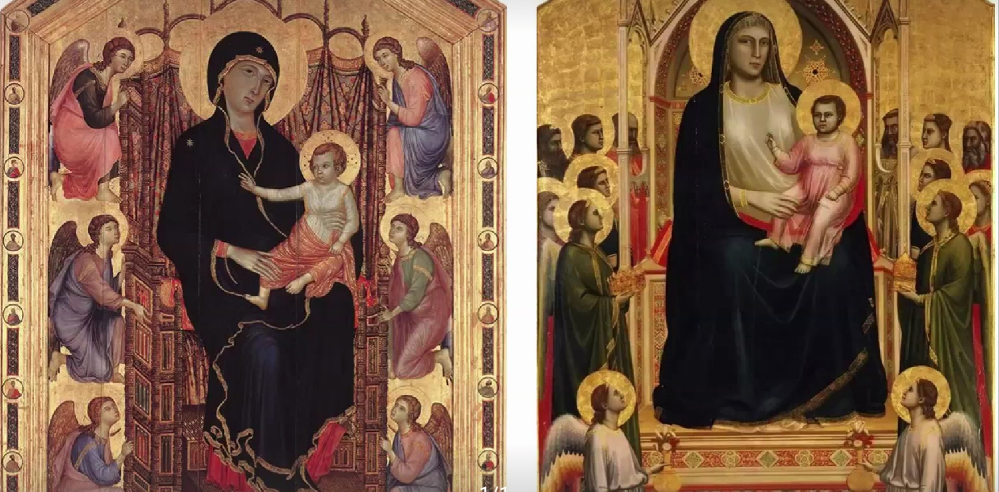
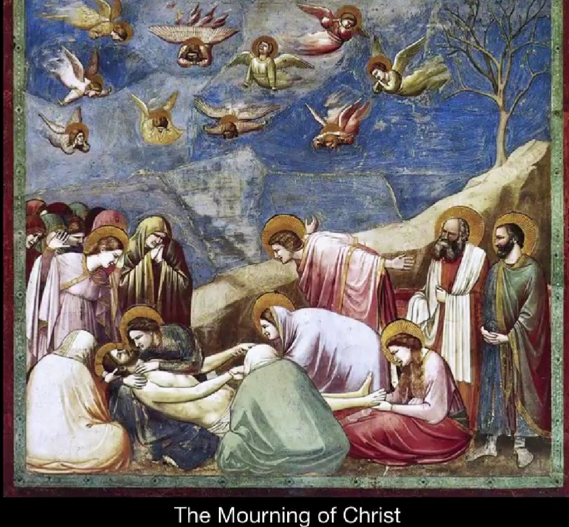
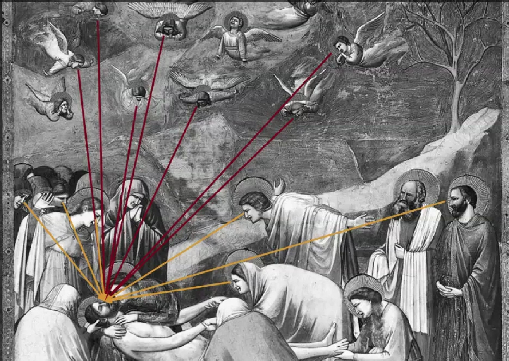
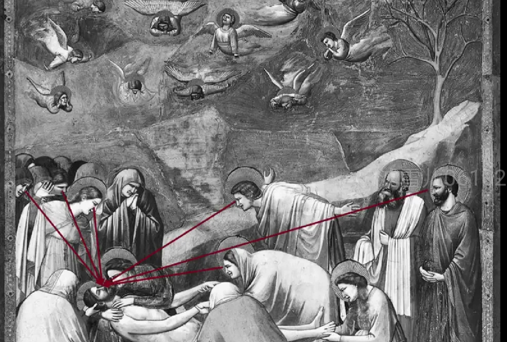
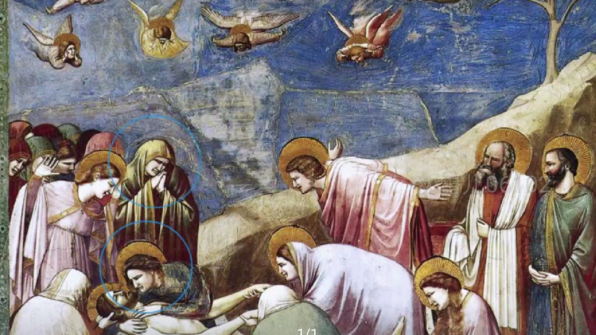
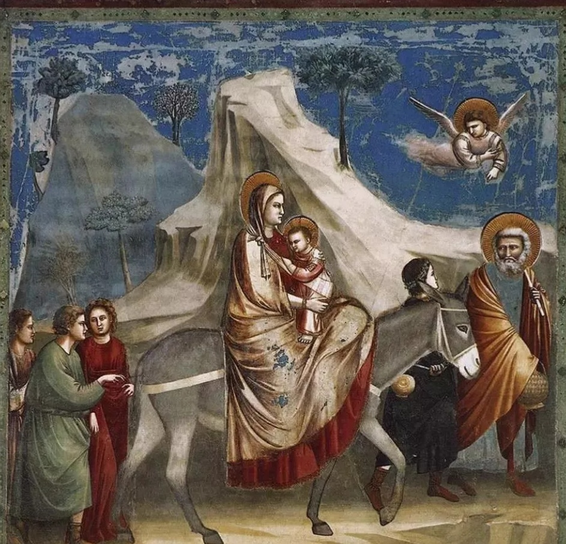
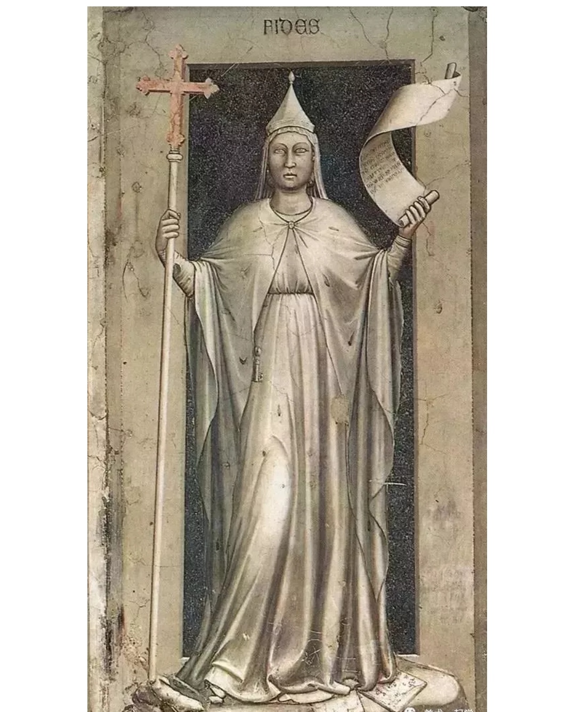

文艺复兴之父–乔托(Giottodi Bondone)
乔托是佛罗伦萨画派的创始人，他不仅表现出卓越的绘画技巧，同时也奠定了文艺复兴的现实主义基础，其作品代表中世纪与文艺复兴的分界线。
中世纪与乔托:
左图的表情有些严肃，想要你臣服，一种高高在上的感觉；两边的天使，都太平面了。右图圣母的胸丰满且圆滑，有些亲近；两边的天使站位，有层次。

乔托[哀悼基督]

人物视线,追随画中人的视线


人物表情，有绝望，悲恸…

乔托的其他作品
[逃亡埃及]：两个扭头的视线是有回应的，好像又有点看向中间，但中间的人，坚定望着远方，表情严肃。

[信德的拟人像]：袍子的线条流畅，衣褶舒缓，两手采用短缩法，脸部与颈部的光影明显，给人以圆雕之感。
